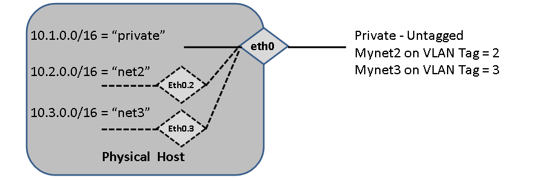
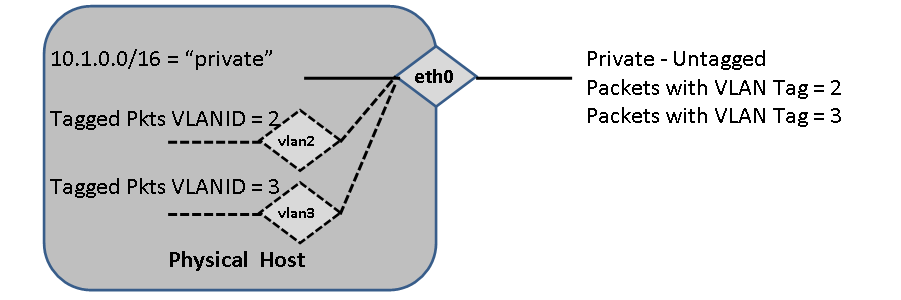
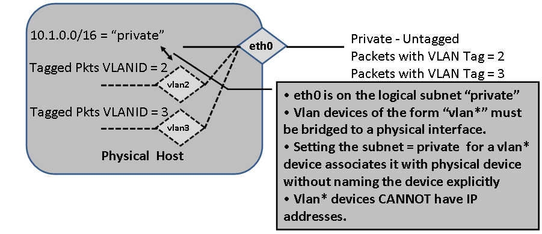

Base Roll: Users Guide: 
| ||
|---|---|---|
| Prev | Chapter 3. Defining and Modifying Networks and Network Interfaces | Next |
Linux supports VLAN tagging on virtual interfaces (i.e. IEEE 802.1Q). For example, if a host has physical interface eth0 (untagged), then the kernel can send and receive a tagged packets if a properly defined interface named eth0.<vlan> has been created and properly configured. Tagging allows the same physical network to be partitioned into many different networks. A key feature of VLAN tagging is that a broadcast packet (e.g. a DHCPDISCOVER packet) only broadcasts on the tagged VLAN in which is was initially sent.
Rocks supports two types of VLAN interfaces - the first is an explicit device name like eth0.10 that is defined on a particular physical interface. The second is a logical device name of the form "vlan*". In Rocks, the physical VLAN device can also have an IP address associated with it, however a logical VLAN device cannot. We use logical VLANs to construct bridges suitable for virtual clusters.
 |
|
Physical VLAN devices are interfaces associated with specific physical interfaces. While eth0 is used as an example, any physical IP interface can have a VLAN associated with it.

FIGURE: Physical VLAN device called eth0.2. This device may be assigned an IP and a network name (e.g. "net") that is unrelated to the network name of the physical device (eth0). All packets sent on this interface will be tagged with VLAN=2. Multiple Physical VLAN devices can be defined.
Use the following example to add a physical VLAN device, assign a tag, and an IP address:
[root@rocks ~]# rocks add host interface compute-0-0-1 iface=eth0.2 subnet=net2 ip=10.2.1.10 [root@rocks ~]# rocks set host interface vlan compute-0-0-1 iface=eth0.2 vlan=2 [root@rocks ~]# rocks list host interface compute-0-0-1 SUBNET IFACE MAC IP NETMASK MODULE NAME VLAN private eth0 00:16:3e:00:00:11 172.16.254.192 255.255.255.0 xennet compute-0-0-1 ------ net2 eth0.2 ----------------- 10.2.1.10 255.255.255.0 ------ ------------- 2 |
The second kind of VLAN interface that Rocks supports is what we call a logical VLAN device. The Virtual VLAN gives the ability of having a raw interface with no IP address assigned that is generally used as a bridge for virtual machines. Virtual VLAN devices have their subnet=<subnet of physical>

FIGURE: Virtual VLAN devices called vlan2 and vlan3. These types of devices may NOT have an IP address (This is a Rocks-specific construction).
[root@rocks ~]# rocks add host interface compute-0-0-1 vlan2 [root@rocks ~]# rocks add host interface compute-0-0-1 vlan3 [root@rocks ~]# rocks set host interface vlan compute-0-0-1 vlan2 2 [root@rocks ~]# rocks set host interface vlan compute-0-0-1 vlan3 3 [root@rocks ~]# rocks list host interface compute-0-0-1 SUBNET IFACE MAC IP NETMASK MODULE NAME VLAN private eth0 00:16:3e:00:00:11 172.16.254.192 255.255.255.0 xennet compute-0-0-1 ------ ------- vlan2 ----------------- -------------- ------------- ------ ------------- 2 ------- vlan3 ----------------- -------------- ------------- ------ ------------- 3 |
At this stage, the vlan interfaces are not currently associated with any physical network device. Linux will not configure these devices on the node without the association. We overload the meaning of subnet in this case to mean: "associate the logical vlan device with the physical device that is in subnet 'x'". As an example, we can associate both vlan2 and vlan3 to be tagged packet interfaces on the the subnet named private.
[root@tranquil ~]# rocks set host interface subnet compute-0-0-1 vlan2 subnet=private [root@tranquil ~]# rocks set host interface subnet compute-0-0-1 vlan3 subnet=private [root@tranquil ~]# rocks list host interface compute-0-0-1 SUBNET IFACE MAC IP NETMASK MODULE NAME VLAN private eth0 00:16:3e:00:00:11 172.16.254.192 255.255.255.0 xennet compute-0-0-1 ------ private vlan2 ----------------- -------------- ------------- ------ ------------- 2 private vlan3 ----------------- -------------- ------------- ------ ------------- 3 |

FIGURE: Virtual VLAN devices called vlan2 and vlan3 are associated with the physical device that is desigated as subnet private. Notice, that no netmask is associated with the vlan2 and vlan3 devices. These are raw, tagged packet interfaces and are mostly used for bridges when hosting VMs.